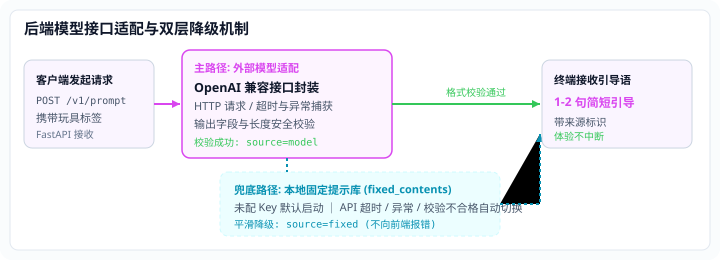

ToyWake
个人原型
给一句提示，把游戏还给亲子
针对幼儿家庭场景探索克制式生成交互：摒弃连续多轮聊天的设备沉迷模式，仅在游戏开端由 AI 生成 1–2 句具象启发，设备随即静默退出，把互动空间留给父母与孩子。

Engineering & Fallback
模型接口适配与双层平滑降级
后端采用 FastAPI 封装标准模型接口，内置格式与适宜性校验，并提供本地固定内容库兜底支持。

主路径：模型适配与校验
实现了兼容 OpenAI 协议的标准 HTTP 客户端封装，支持超时控制与错误捕获。对模型输出进行严格字数约束与儿童安全合规校验，成功时返回带 source=model 的短语提示。
兜底路径：本地固定库降级
内置预置的高质量启发提示库（fixed_contents）。在未配置 API Key、网络超时或模型输出校验不合规时，自动切换至本地固定内容（source=fixed），保证前端交互体验平滑。
Facts & Boundaries
当前状态与事实边界
代码工程状态
双端原型代码已跑通
Python FastAPI 后端与 Android (Kotlin + Jetpack Compose) 客户端原型已在本地跑通，相关代码已开源于 GitHub。
测试验证状态
现有测试采用模拟响应
测试环节使用 mock / monkeypatch 模拟网络请求与异常响应，默认运行于本地固定库模式。
客观效果边界
家庭效果未做真实核验
本项目处于个人探索原型阶段；本轮未核验真实商用模型调用效果，无可引用的真实家庭留存或长期效果数据。